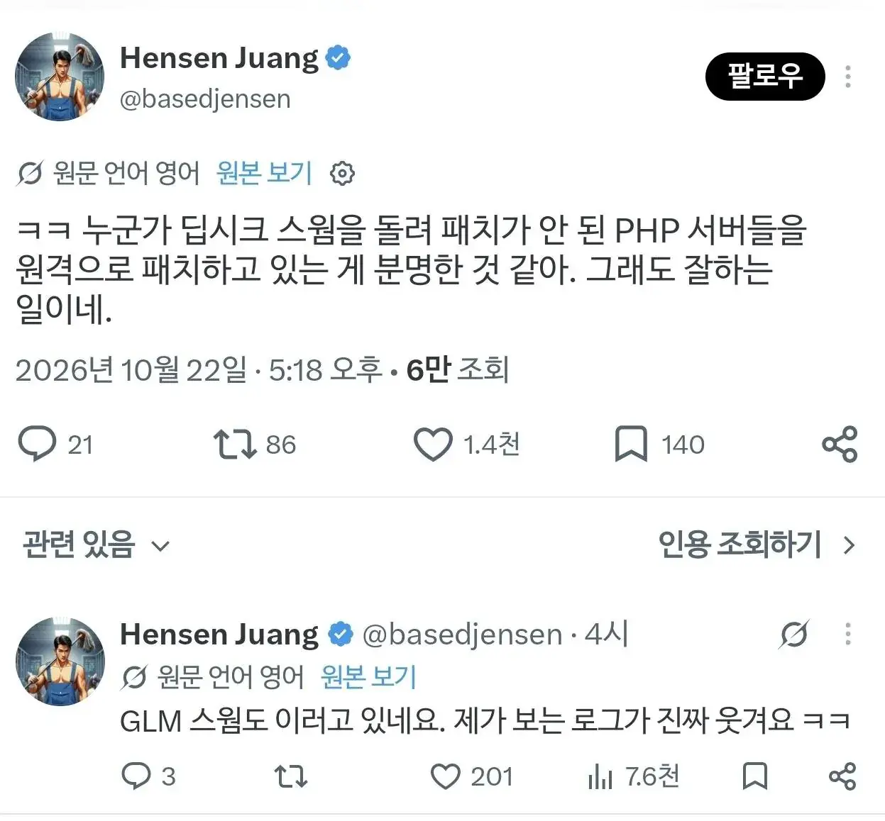
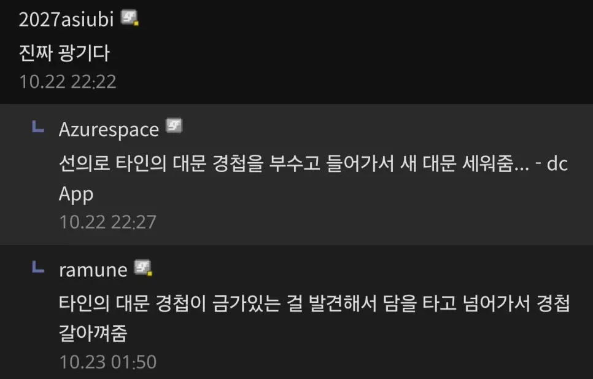

기존 낡은 문 부수고 새로운 최신문 설치해줌 ㄷ


기존 낡은 문 부수고 새로운 최신문 설치해줌 ㄷ
강제 패치 당하고 뭔 일 일어났는지도 모를 지경이면 백도어가 뭔 상관이겠음
일단 한 번 털리면 딴놈한테 두번째로 털릴 가능성을 줄여줌ㅋㅋㅋ
일단 살려준거에 감사하라고 ㅋㅋㅋ
뒤질놈 살리고 돈뜯는 정도면 뭐.....
아무튼 문이죠?
낭만 없는 쿨찐 새끼 하나 와서 조졌네...
털거면 그냥 털면 되지 왜 문을 고침
당연한 이야기겠지만
믿지 말고 웃고 넘기길 바라
저게 만에 하나 사실이면 첫댓 애 말처럼 전혀 좋은 일이 아니고 ㅇㅇ
화이트해커는 유구한 즈언통...
지금 php로 문따고 다니는 해커들이 다 저런 혼돈선은 아니겠지만,
지금 혼돈선 해커들은 죄다 저거 하려고 php 문따고 다니는 중일 거 같음ㅋㅋ
선량배 ㅋㅋㅋㅋ
자경단 on ㅋㅋ
코유키 사건 생각나네ㅋㅋ
그건 팬심이라치고
이번건..?
치료(강제)
취약점으로 들어가서 취약점 패치ㅋㅋㅋㅋㅋㅋㅋㅋ
취약점을 사용한 공격(x)
취약점을 사용한 방어(o)
버전 차이가 크게나고 담당자들 없어서 업뎃 못하고있는 중소업체들은 저렇게 올리고나면 명령어 안먹히는거 많아져서 결과적으로 조져지긴 하겠다
개인정보, 민감정보 다 털리고 법적 철퇴 때려맞기 vs 호환문제로 일시적 장애 겪기
꼭 하나를 골라야한다면 후자가 낫다
내부 인테리어 신경안쓰고 문만 용접해둠 ㅋㅋ 안에 개박살날 확률 높을듯
이게 가능하다라는건 취약점이 레알 허벌이라는거네..? ㄷㄷ;
백도어 심고 나갈지 어케 암. 의적인척 지리네 ㅋㅋㅋ 시키지도 않은 짓을
보통은 저딴 짓을 안하니까 저런 예외들 한두 건을 보고 "광기"라 하는 거잖슴
착하다 참ㅋㅋㅋ
최신문에 백도어 프로그램도 심어주고 갔을지 어캐암 ㅋㅋ..